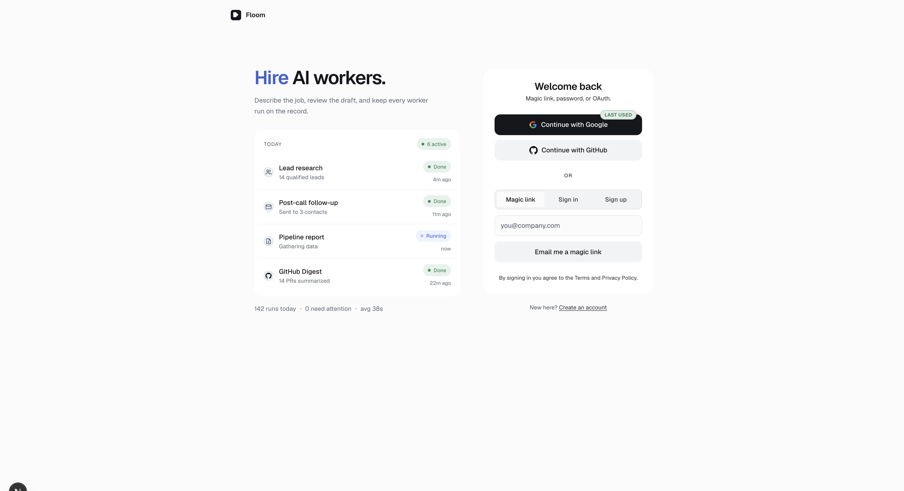
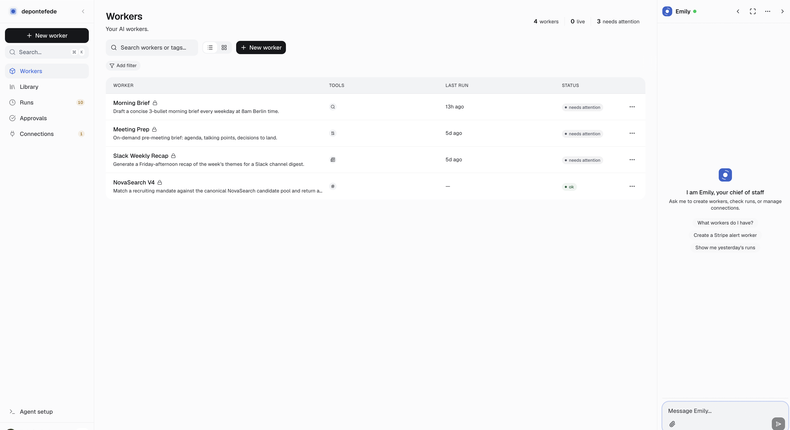
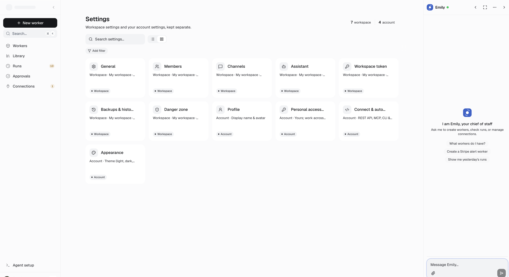
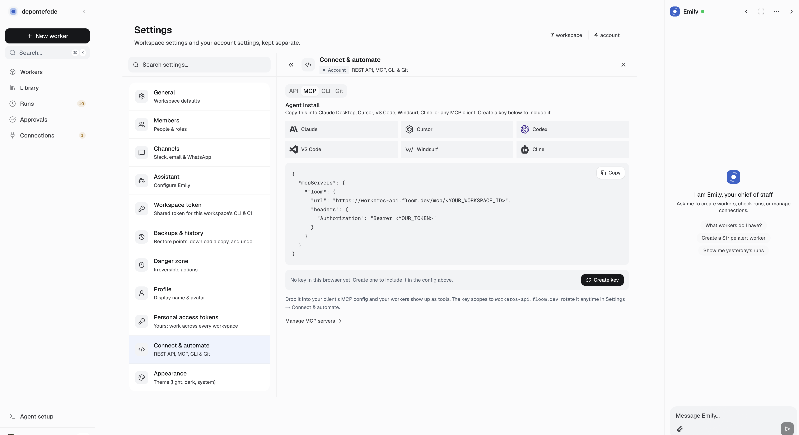
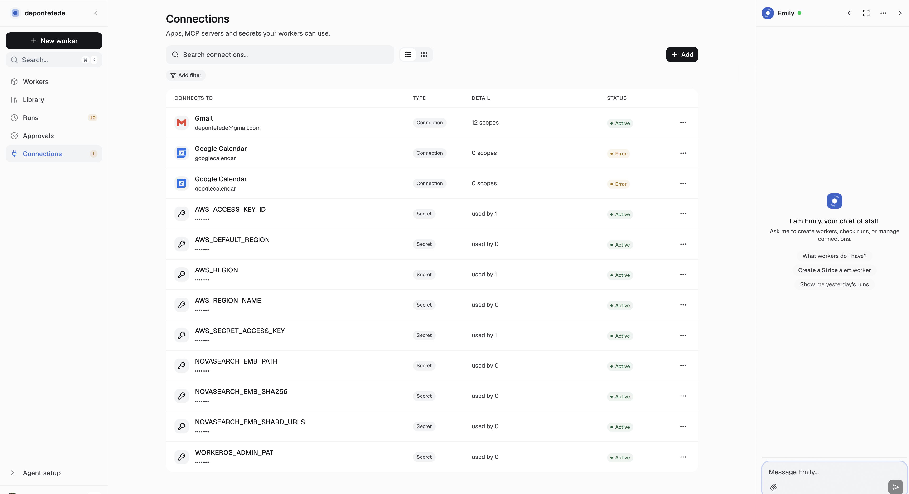

Automated gates
- PASS web vitest — 32 passed, 1 skipped (connections timeout — jsdom)
- PASS
test_localhost_google_oauth_forces_fresh_account_prompt - PASS
npm run check-drift— zero dashboard/engine drift - PASS landing
start-channel-819— 5/5 (code on main)
Verified items
Not just copy: left panel is “Hire AI workers.” + Today activity card + stat footer; auth card is centered “Welcome back” / “Magic link, password, or OAuth.” Old overlay (“Floom Cloud”, “Recent worker runs”, LR/PU letter avatars) was a sync bug — overlay web/overlay/app/login/page.tsx restored on every npm run sync.

localhost:3000/app/login — re-verified 2026-06-24 after overlay fix
Search, list/grid toggle, Add filter, New worker — collection chrome from audit batch.

workeros.floom.dev/app/workers — authenticated · UI synced with localhost engine
Workspace + account settings with search and view toggle — but resting view must be list first. Prod screenshot below shows gallery default (bug: emptyState("grid") + view.default: "grid"). Fixed on disk in engine settings/page.tsx; not yet deployed.

workeros.floom.dev/app/settings — prod still gallery-first until engine bump
Six MCP client icons in a row; config references workeros-api.floom.dev.

Settings → Connect & automate → MCP tab
Apps + secrets list with collection chrome; Google Calendar humanized in redirect flow (vitest).

workeros.floom.dev/app/connections
Fixed in floom#1959 (Avatar.tsx, PromptInput.tsx). Prod screenshots above still show pre-deploy circles until dashboard is redeployed with the new engine pin.
connections-redirect-flow-guard.dom.test.tsx — 2 pass, 1 skip (timeout state needs manual browser).
Pytest verifies Google OAuth on localhost forces fresh account prompt and correct callback base when WORKEROS_OAUTH_CALLBACK_BASE is set.
Open / follow-up
/start/slack + /start/whatsapp on prod
Code fixed on main (vitest 5/5). Production apex still returns 404 — needs landing redeploy (npm run deploy:prod from repo root).
Vitest skipped (jsdom + React 19 timers). Verify once in browser during a stuck Composio auth.
Requires repo-root .env with SUPABASE_SERVICE_ROLE_KEY, then bash ops/dev-local-api.sh + cd web && npm run dev:local. Current web/.env.local points API at prod and breaks localhost callback unless dev:local is used.
Run cd web && npm run deploy:prod to ship engine 01fe1e65 (squircle icons, collection fixes) to workeros.floom.dev.
Dev commands added this session
ops/dev-local-api.sh— local FastAPI on :8000 (Python 3.12 venv)cd web && npm run dev:local— localhost OAuth env overridesdocs/LOCALHOST-AUDIT-CHECKLIST.md— living checklist